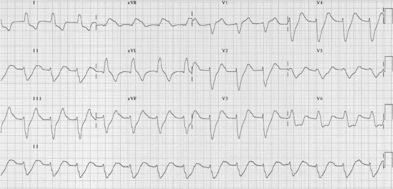
Broad QRS complexes secondary to hyperkalaemia
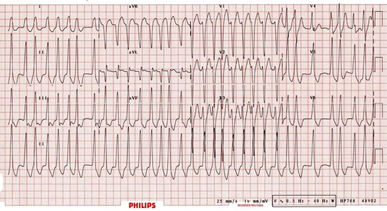
Atrial fibrillation in a patient with Wolfe-Parkinson-White Syndrome; rapid, irregular, broad complex tachycardia with a LBBB morphology.
| Complex | Net determination |
|---|---|
| rs | Net Neutral (equal parts above and below the baseline) |
| Q | Negative (purely negative deflection) |
| qR | Net Positive (most area is above the baseline with some below) |
| QR | Net Positive (most area is above the baseline with some below) |
| QS | Negative (purely negative deflection) |
| rS | Net Negative (most area is below the baseline with some above) |
| rsR' | Net Positive (most area is above the baseline with some below) |
| RS | Net Positive (most area is above the baseline with some below) |
| qRs | Net Positive (most area is above the baseline with some below) |
Large amplitude (height) in QRS complex can be due to ventricular hypertrophy &/or enlargement as a result due to the larger mass, there is larger electrical signals produced
Electrode to heart distance impact QRS amplitude (hence slender has smaller QRS versus obese) or in patients with hyperinflation of thorax (ie. COPD).
Must be able to differentiate pathological Q-waves as they provide infarction evidence – dictated by amplitude and duration (width); it is abnormal if:
Septal q-wave seen in lateral leads (V5-V6, aVL, & Lead I) due to depolarisation of ventricular septum Isolated & large Q-wave is seen Lead III which amplitude variate with ventilations (respiratory Q-wave).
Common cause in AMI – Q-wave infarction is caused if AMI leaves pathological Q-waves; must be in two (2) contiguous leads to be abnormal. These causes include:
High amplitudes in R-waves can suggest ventricular enlargement or hypertrophy; this is determined by;
If R-wave in V1 is larger than S-wave in V1 then R-wave should be < 5mm high
Internal from beginning of QRS complex to R-wave’s apex – This reflects on the time elapsed from depolarisation to spread from the endocardium to epicardium; A prolonged peak time is due to hypertrophy &/or conduction disturbance.
Should be natural QRS complex progression of amplitude (height) from V1 to V6 – Due to the contraction direction to left and downward, V1 & V2 should be negative.
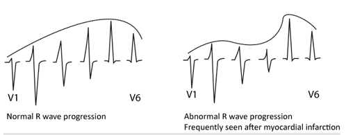
For V1 & V2 – Ensure R-wave is not bigger than S-wave (<5mm)
Mostly positive in most leads, with amplitude decreasing with increased age. The ST segment transition to T-wave should be smooth. It can be asymmetrical, as it has a slight upslope (1st half) and downslope (2nd half).
T-Wave changes are easily misinterpreted (mostly inverted T-waves), so take caution.
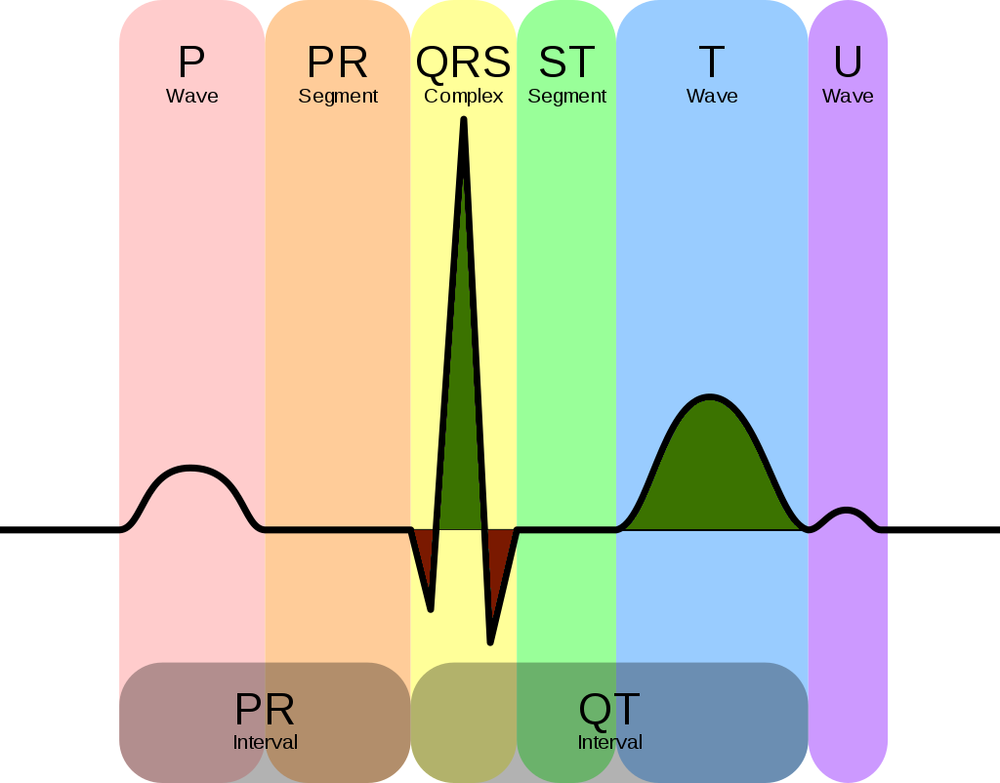
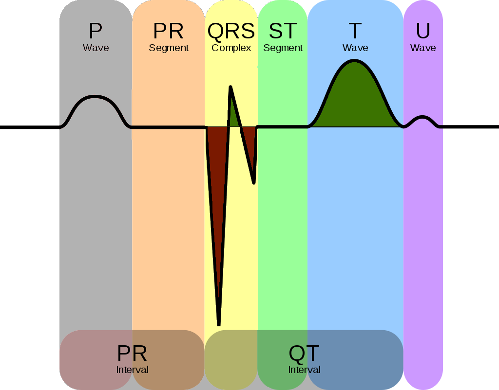
| Normal T-wave |
|
|---|---|
| Abnormal T-waves |
|
| Tall, narrow, symmetrically peaked T-waves are characteristically seen in hyperkalaemia. |
|---|
| 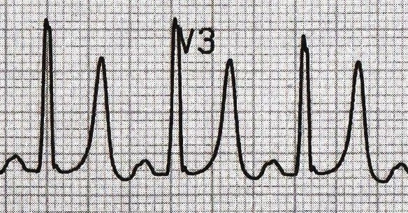 |
| Broad, asymmetrically peaked or ‘hyperacute’ T-waves are seen in the early stages of (STEMI) |
|---|
| 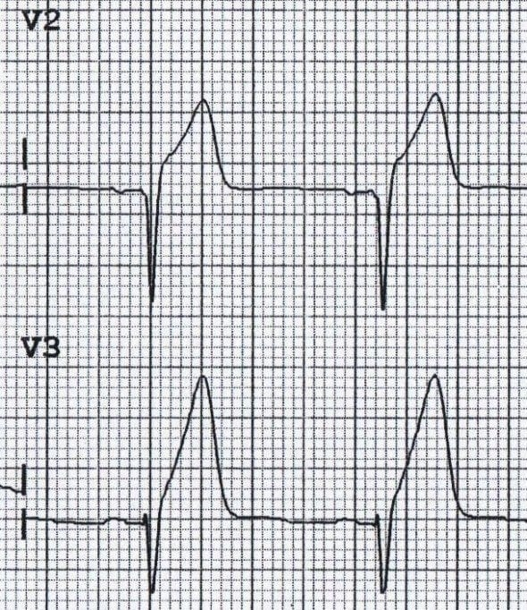 |
| Inverted T-waves in the right precordial leads (V1-3) are a normal finding in children, representing the dominance of right ventricular forces. |
|---|
| 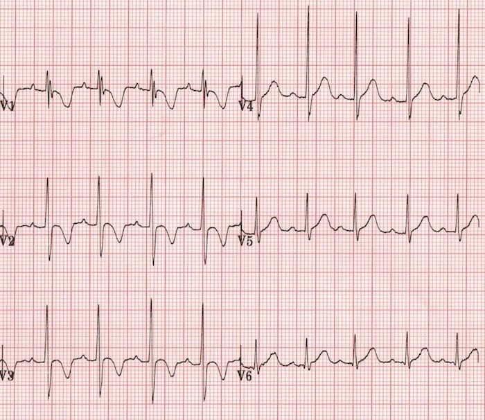 |
| Inverted T-waves in the right precordial leads (V1-3) are a normal finding in children, representing the dominance of right ventricular forces. |
|---|
| 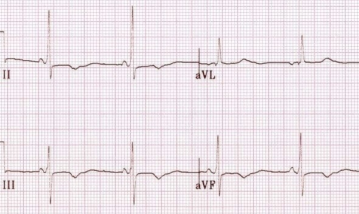 |
Myocardial Ischaemia and Infarction: T-wave inversions due to myocardial ischaemia or infarction occur in contiguous leads based on the anatomical location of the area of ischaemia/infarction:
|
| Inferior T wave inversion with Q waves, prior to myocardial infarction |
|---|
| 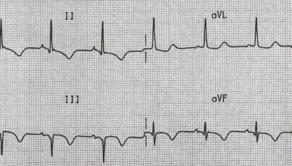 |
| Left ventricular hypertrophy (LVH) produces T-wave inversion in the lateral leads I, aVL, V5-6, with a similar morphology to that seen in LBBB. |
|---|
| 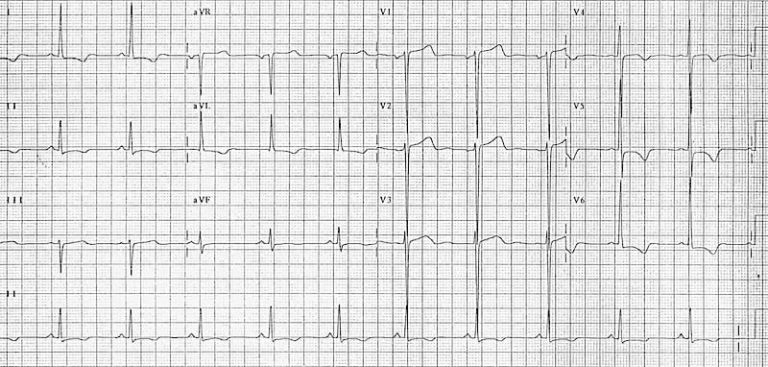 |
| Right ventricular hypertrophy produces T-wave inversion in the right precordial leads V1-3 and also the inferior leads (II, III, aVF). |
|---|
| 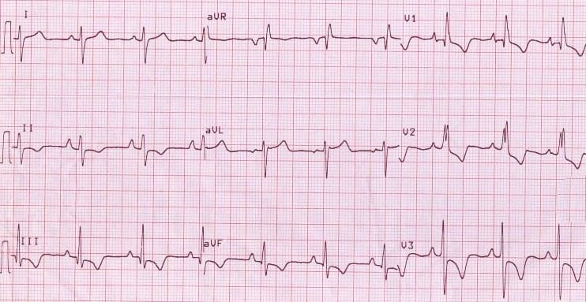 |
| Acute right heart strain (e.g. secondary to massive pulmonary embolism) produces a similar pattern to RVH T-wave inversions in the right precordial (V1-3) and inferior (II, III, aVF) leads. |
|---|
| 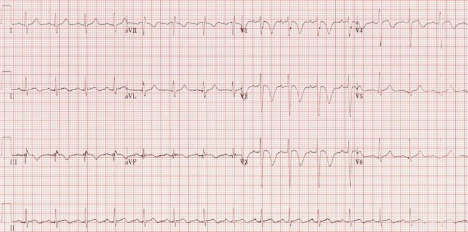 |
| Events causing a sudden rise in intracranial pressure (e.g. subarachnoid haemorrhage) produce widespread deep T-wave inversions. |
|---|
| 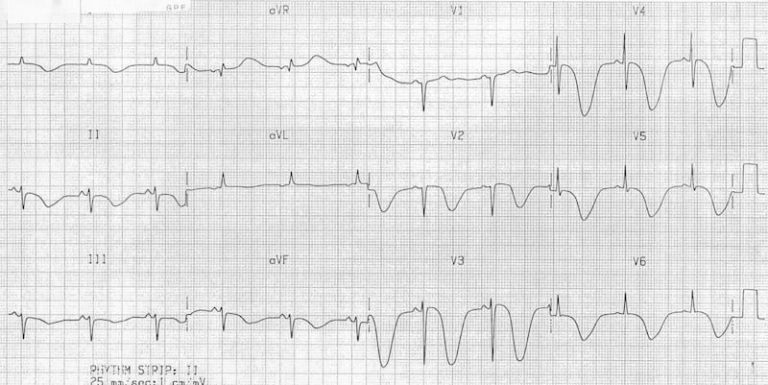 |
| Biphasic T waves due to ischaemia – T waves go up, then down |
|---|
| 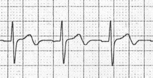 |
| Biphasic T waves due to hypokalaemia – T waves go down, then up |
|---|
| 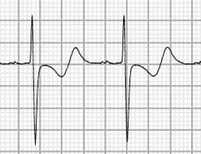 |
Usually show inverted T-waves due to different electrical vector (inversion may be present in all leads); should normalise during puberty.
Progression in T-waves should follow R-wave progression rule.
< 6mm in limb leads / 8-10mm in V2-V3 – Outside these ranges are abnormal caused by hyperkalaemia; deafferented with hyperacute T-waves seen in ACS (broad-based, high & symmetric).
V1 concordant is normal (as V1 QRS is negative); can occur in L3, V2 & aVL – Two inversions in two contiguous leads is a medical concern.
Low amplitude common in post-ischemia; common in V1-V3 if stent is in LAD or L2, L3, & aVF (RAD/Cx)
Has a positive & negative deflection – Biphasic has no significance and classified as per positive or inverted.
The ST Segment is a reflection on the plateau phase (Phase 2) as membrane potential remains relatively unchanged (most ventricles are in this phase) therefore, there isn’t electrical potential differences in myocardium resulting in the flat & isoelectric ST segment
Ischemia is always confined to a specific area where cell’s membrane potential change as result of the ischemia – therefore electrical potential changes in the myocardium displacing the ST segment up or down.
The magnitude of ST segment elevation or depression is measured from the isoelectric baseline to the J-point.
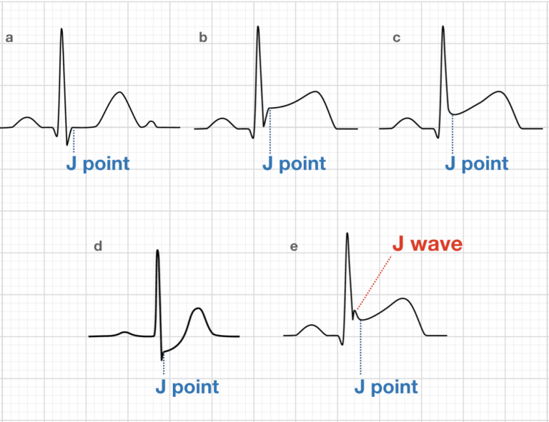
Caused by abnormal repolarisation
Abnormal depolarisation causing abnormal repolarisation
Ischemia causes straight or convex ST elevation - Straight ST segments can be upsloping, horizontal or downslope (rare). Non-ischemic ST elevation is usually concaved – Common in any population. Most males under 70yo has ST elevation in V2 & V3 – Therefore take caution
Causes of ST Segment Elevation
If ST segment is < 0.5 mm then it is acceptable in all leads; anything more is considered pathological
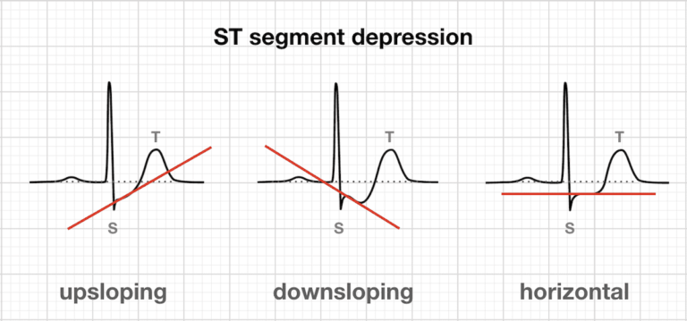
Represents total time for depolarisation and repolarisation (beginning of QRS to end of T-wave). Prolonged QR duration leads to dangerous ventricular arrhythmias – Inversed to heart rate (ie. High HR = Short QT).
Explains the inverse relationship of QT & heart rate – This creates the corrected QT duration (QTc) calculated automatically – Cannot be used if bradycardia or tachycardia.
Note: All variables are in seconds (s)
Difference between the shortest & longest QT interval. This is due to the variations of QT interval in different leads,
| Thanh Bui, AP60825 Event Medic, Emergency Medical Technician & Volunteer Development Officer
| |
Andrew Moffat, AP16790 |
St John Ambulance Western Australia Ltd (ABN 55 028 468 715) (St John WA) operates ambulance and other pre-hospital clinical services. St John WA’s Clinical Resources, including its Clinical Practice Guidelines (Clinical Resources), are intended for use by credentialed St John WA staff and volunteers when providing clinical care to patients for or on behalf of St John WA, within the St John WA Clinical Governance Framework, and only to the extent of the clinician’s authority to practice.
The content of the St John WA Clinical Resources is provided for information purposes only and is not intended to serve as health, medical or treatment advice. Any user of this website agrees to be bound by these Terms of Use in their use of the Clinical Resources.
St John WA does not represent or warrant (whether express, implied, statutory, or otherwise) that the content of the Clinical Resources is accurate, reliable, up-to-date, complete or that the information contained is suitable for your needs or for any particular purpose. You are responsible for assessing whether the information is accurate, reliable, up-to-date, authentic, relevant, or complete and where appropriate, seek independent professional advice.
St John WA expressly prohibits use of these Clinical Resources to guide clinical care of patients by organisations external to St John WA, except where these organisations have been directly engaged by St John WA to provide services. Any use of the Clinical Resources, with St John WA approval, must attribute St John WA as the creator of the Clinical Resources and include the copyright notice and (where reasonably practicable) provide a URL/hyperlink to the St John WA Clinical Resources website.
No permission or licence is granted to reproduce, make commercial use of, adapt, modify or create derivative works from these Clinical Resources. For permissions beyond the scope of these Terms of Use, including a commercial licence, please contact medservices@stjohnambulance.com.au
Where links are provided to resources on external websites, St John WA:
Your use of any external website is governed by the terms of that website, including any authorisation, requirement or licence for use of the material on that website.
To the maximum extent permitted by law, St John WA excludes liability (including liability in negligence) for any direct, special, indirect, incidental, consequential, punitive, exemplary or other loss, cost, damage or expense arising out of, or in connection with, use or reliance on the Clinical Resources (including without limitation any interference with or damage to a user’s computer, device, software or data occurring in connection with such use).
Please read this cookie policy carefully before using Clinical Resources from St John WA.
The cookies used on this site are small and completely anonymous pieces of information and are stored on your computer or mobile device. The data that the cookies contain identify your user preferences (such as your preferred text size, scope / skill level preference and Colour Assist mode, among other user settings) so that they can be recalled the next time that you visit a page within Clinical Resources. These cookies are necessary to offer you the best and most efficient possible experience when accessing and navigating through our website and using its features. These cookies do not collect or send analytical information back to St John WA.
Clinical Resources does integrate with Google Analytics and any cookies associated with this service enable us (and third-party services) to collect aggregated data for statistical purposes on how our visitors use this website. These cookies do not contain personal information such as names and email addresses and are used to help us improve your user experience of the website.
If you want to restrict or block the cookies that are set by our website, you can do so through your browser setting. Alternatively, you can visit www.internetcookies.com, which contains comprehensive information on how to do this on a wide variety of browsers and devices. You will find general information about cookies and details on how to delete cookies from your device. If you have any questions about this policy or our use of cookies, please contact us.